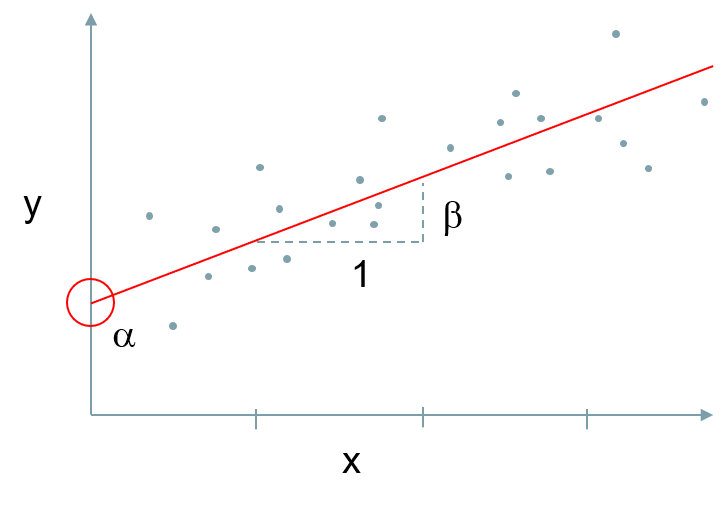

2 Regression Models
In regression, we are attempting to predict a variable \(y\), using another \(x\). We will stick to a single \(x\) variable for this post, but it can be expanded to many different \(x\)s in practice. A multiple regression allows us to adjust for many factors when predicting \(y\), and is the basis for indirectly-standardised ratios, such as the mortality ratio HSMR ref and SHMI ref. To understand the technique, we will start with a linear model before considering binary events (like death or readmission), or count-based data (like length-of-stay).
The figure below illustrates what goes on in linear regression. We can describe \(y\), by using an ‘intercept’ \(\alpha\) (where our line crosses the \(x\) axis), and how much \(y\) increases when \(x\) increases by one, the ‘coefficient’ \(\beta\).

The formula for this is therefore: \[ y = \alpha + \beta x + \varepsilon\] + \(\alpha\)<U+F061> = Intercept + \(\beta\) = Coefficient (how much x affects y) + \(\varepsilon\)= Error (Residual)
2.1 Linear Model
2.1.1 Create Dataset
To demonstrate a linear model, we will first generate some appropirate data. We will set the ‘seed’ which aligns the random number generator so it is reproducible on your own machine. We will then use the normal distribution functions to create ‘\(y\)’ and ‘\(x\)’. Some of the functions used below work best with data.frames, so we’ll combine our \(y\) & \(x\) into a data.frame called dt.
library(ggplot2)## Registered S3 methods overwritten by 'ggplot2':
## method from
## [.quosures rlang
## c.quosures rlang
## print.quosures rlangset.seed(111)
x <- rnorm(50, 20, 5)
y <- x + rnorm(50, 10, 3 )
dt <-data.frame(x,y)2.1.2 Plot the data
We can now plot the data points with ggplot. ggplot uses a syntax called the ‘grammar of graphics’, and below, we are declaring a ggplot using dt, declaring an ‘aesthetic’ (aes) layer mapping \(x\) and \(y\) to the correct axes, then we are draw a plot layer called a ‘geometric’ (geom), in this case a ‘point’ plot (scatter plot).
ggplot(dt, aes(y=y, x=x))+
geom_point()
Our data appears to be linearly related. As \(X\) increases, \(Y\) increases as well.
2.1.3 Model build
Now we can examine the relationship between \(y\) and \(x\) using the linear model function lm. We will create an object called model1 as an lm. This can be accessed directly, but the summary function is a great way to examine the object.
model1 <- lm(y~x)
summary(model1)##
## Call:
## lm(formula = y ~ x)
##
## Residuals:
## Min 1Q Median 3Q Max
## -5.4278 -1.9559 0.0569 2.1088 5.8754
##
## Coefficients:
## Estimate Std. Error t value Pr(>|t|)
## (Intercept) 9.61639 1.30986 7.342 2.21e-09 ***
## x 1.04677 0.06575 15.921 < 2e-16 ***
## ---
## Signif. codes: 0 '***' 0.001 '**' 0.01 '*' 0.05 '.' 0.1 ' ' 1
##
## Residual standard error: 2.744 on 48 degrees of freedom
## Multiple R-squared: 0.8408, Adjusted R-squared: 0.8375
## F-statistic: 253.5 on 1 and 48 DF, p-value: < 2.2e-16The summary output gives us lots of information. The intercept value (\(\alpha\), or sometimes called \(\beta_0\) in some environments), 9.61639 is where we cross the \(y\)-axis, so a value of \(x\)=0 would predict a \(y\) value of 9.61639.
The \(x\) estimate (coefficient) tells us that \(y\) increases by 1.04677 for each \(x\). So to predict \(y\) when \(x = 2\), we have:
\[ y = \alpha + \beta x\]
\[ y = 9.61639 + ( 2* 1.04667) = 11.70973 \]
The residuals (not included above) are the error around each estimate, or the distance from the centre line. If we sum them, they will add to zero, as the centre line is the average, and half the points are negative and half positive.
We can confirm this by using our model to predict new data. This uses the predict function, and we can fit it back to our data set, to a new data set, or in this case to the single value \(x=2\). predict expects a data.frame for it’s newdata argument, so we will provide it with a data.frame with a single row, and column \(x\) is set to 2.
predict(model1, newdata=data.frame(x=2))## 1
## 11.70993
Other things we are interested in are the standard errors and the p-values under Pr(>|t|) meaning that, under the t-distribution with appropriate degrees of freedom, this is the probability of getting this result. Conventionally we tend to accept is a ‘statistically significant if it is <0.05 (’95% significant’). We can also turn this into a 95% confidence interval using the confint function:
confint(model1)## 2.5 % 97.5 %
## (Intercept) 6.9827379 12.25003
## x 0.9145748 1.17897
We also have two R2 calculations, that vary slightly in their assumptions, but both can be interpreted as the percentage of variation explained by our model. Our model explains \(\sim 84\)% of variation in \(y\), and the rest is ‘noise’ or natural variation.
2.1.4 How good is our model?
We’ve got our R2 in the section above, but what about comparing models or looking for bias? This is always a relative question, because no model is perfect, but we can do a few things to convince ourselves that our model is doing a good job. If comparing two linear models, we can use an F-test, a statistical test that gives us a p-value as an output. Strictly, this should only be used for ‘nested’ models, where one is larger than the other and the smaller mode can be considered a reduced version of the larger one. E.g. with a larger model: \(y \sim x_1~+x_2\), we can consider \(y \sim x_1\) as a nested model.
We can also look at plots of our residual errors (see the OneNote document). If our model is doing a good job, we would expect normally distributed errors, and little/no discernible patterns in the residuals (although this is variable in small datasets like ours). Data points with high ‘leverage’ have strong influence on the model, and if they look extreme, they warrant further investigation. We will plot the residuals below, setting the plotting parameters par for a panel of 2 * 2 plots, rather than single plots on pages.
par(mfrow=c(2,2))
plot(model1)
We have fairly normally distributed plots (although it’s only 50 data points). The normal Q-Q plot would line up on the diagonal if the plot was perfect, and it’s quite close. The standardised residuals (residuals/standard error) are fairly flat and a there are a few higher leverage points that we might investigate if we were taking this model further.
2.1.5 Plot our regression line on to our data
We’ll use ggplot again and add a geom_smooth layer. Smoother plots add ‘best fit’ lines, and one of these methods is lm. We will allow ggplot to make the same linear model we did, as it’s easier than adding predictions directly from our model1 object. The grey section surrounding the line is the standard error of the lm.
ggplot(data.frame(y,x), aes(y=y, x=x))+
geom_point()+
geom_smooth(method="lm", col="red")